Hello everyone! Thank you for visiting my website. Here, I'm hoping to give you a glimpse into my life, interests, aspirations, and more. So, let's embark on this journey together and explore the facets of who I am.
Name: Mickronli Medol
Greetings! My name is Mickronli Medol, but you can simply call me Mick. My name isn't just a label; it embodies my identity and essence. It reflects my cultural roots and personal history, serving as a unique marker of my individuality. Growing up, my name has always been a conversation starter, prompting curiosity and leading to deeper conversations about my heritage and background. It's a name that I wear with pride, as it connects me to my ancestors and my community.
From a young age, I have always been curious and eager to learn about the world around me. This curiosity has driven me to pursue various interests and hobbies, each of which has contributed to my personal growth and development. My journey has been filled with countless experiences, both challenging and rewarding, that have shaped me into the person I am today. I believe that life is a continuous learning process, and I strive to embrace every opportunity for growth and self-improvement.
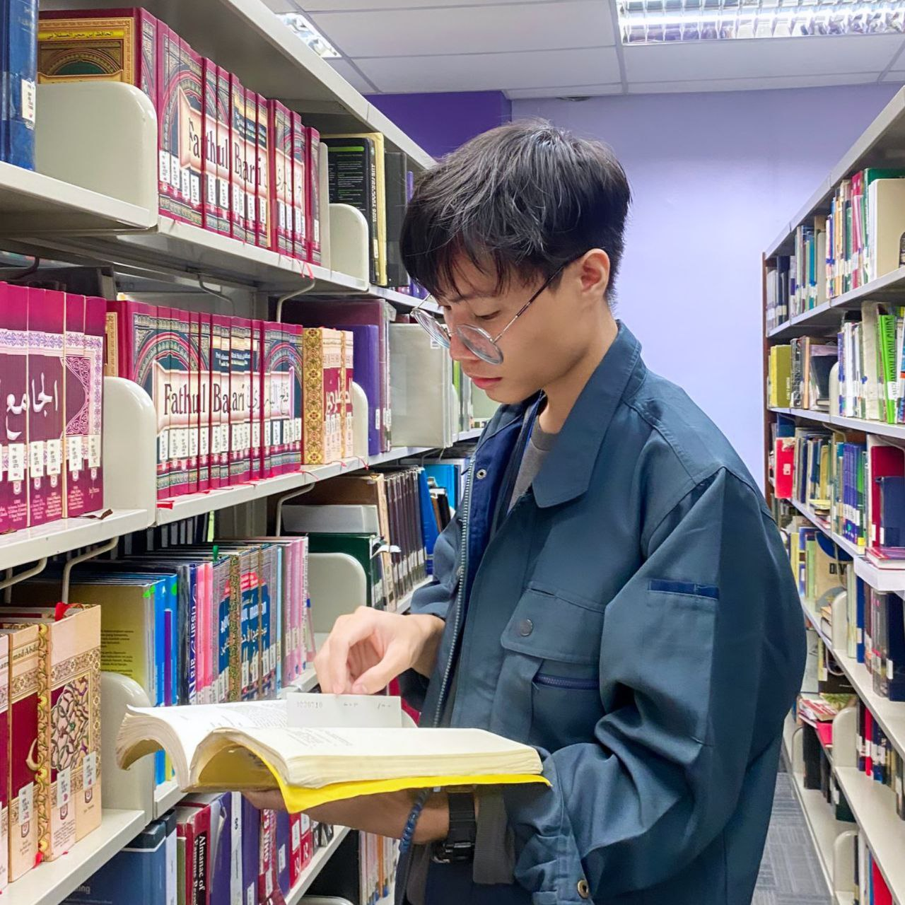
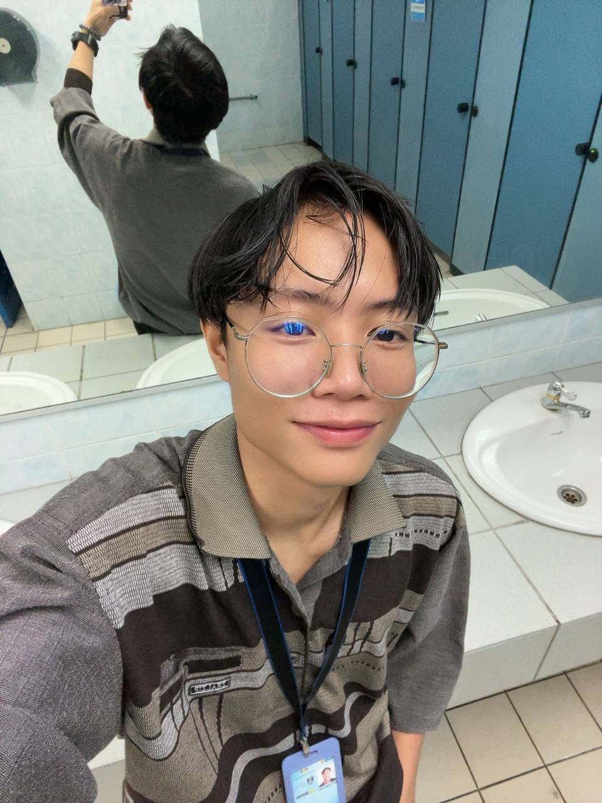
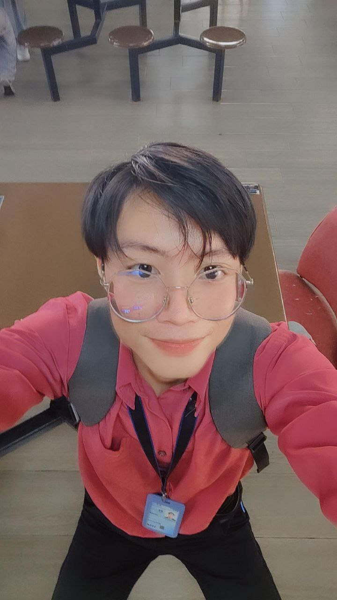
Welcome To My Blog!
Age: 21 Years
Hover over the image:
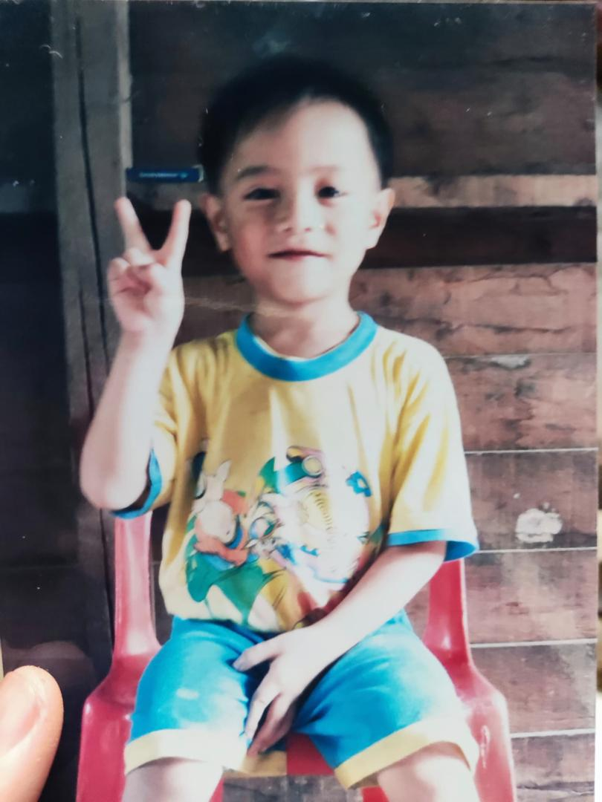
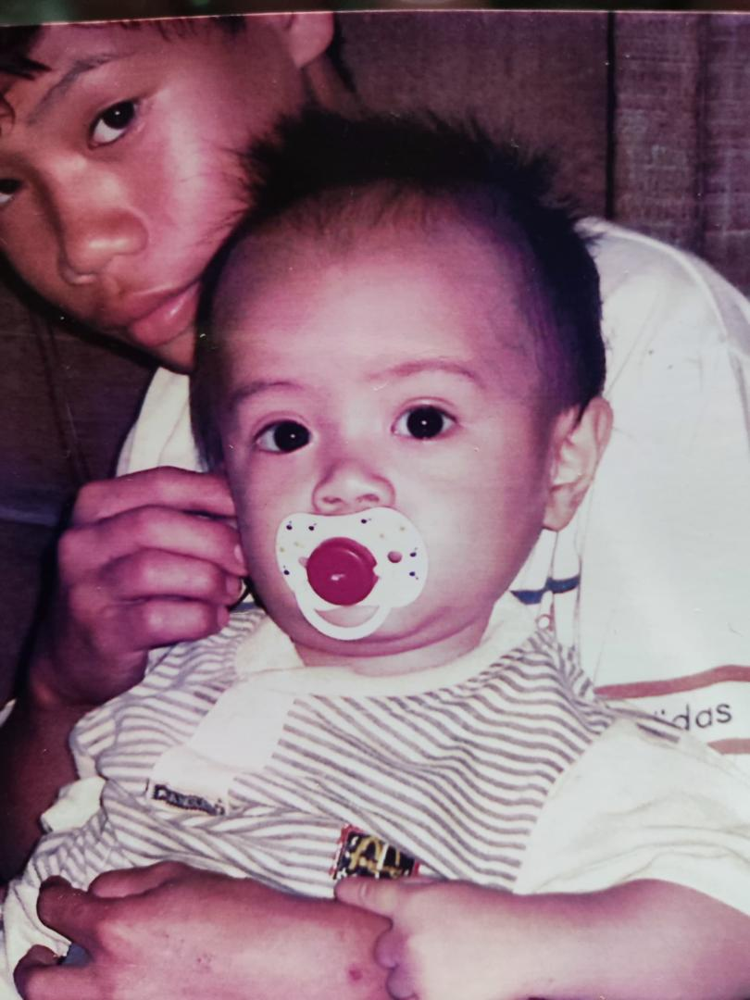
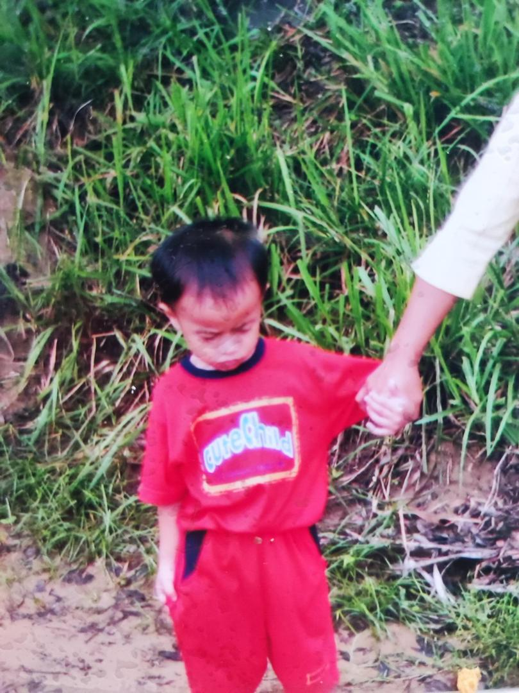
As of December 1, 2003, I have completed 21 revolutions around the sun. Each passing year has enriched me with experiences, taught me valuable lessons, and shaped me into the person I am today. I embrace the opportunities for growth and learning that each new year brings. Turning 21 is a significant milestone in my life, marking the transition from adolescence to adulthood. It's a time of reflection, where I look back on the years that have passed and the journey that lies ahead. Each year, I set new goals and aspirations, constantly striving to better myself and make a positive impact on the world around me.
Residence: Kampung Tondig, Kota Marudu, Sabah
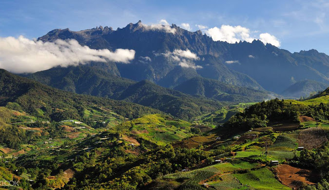
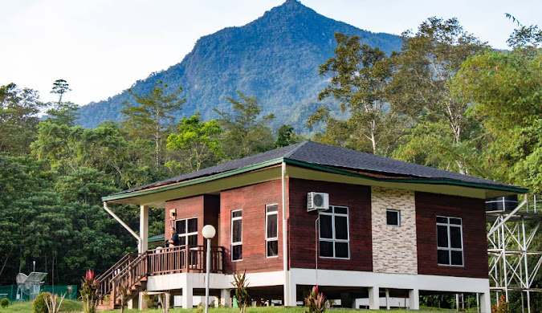
Welcome to Kampung Tondig, nestled in the heart of Kota Marudu, Sabah. Surrounded by lush greenery and serene landscapes, this quaint village is more than just a place to reside; it's a sanctuary for the soul. Growing up here has instilled in me a deep appreciation for nature's beauty and the simplicity of rural life. The tranquil environment of Kampung Tondig has provided me with a peaceful retreat from the hustle and bustle of city life. Here, I have formed lasting connections with my neighbors and experienced the warmth and hospitality of a close-knit community. The scenic landscapes and natural wonders of my village have inspired a deep-seated love for the environment and a commitment to preserving it for future generations.
Number of Siblings: 7
I hail from a family of eight siblings, with me being the sixth in line. Together, we form a tight-knit unit bonded by love, laughter, and shared experiences. My siblings are not just my family; they're my closest friends and pillars of support in life's journey. Growing up in a large family has taught me the values of teamwork, empathy, and resilience. Each of my siblings brings their own unique personality and strengths to our family dynamic, creating a rich tapestry of experiences and memories. Our bond is unbreakable, and I cherish the moments we spend together, whether it's celebrating milestones or simply enjoying each other's company.
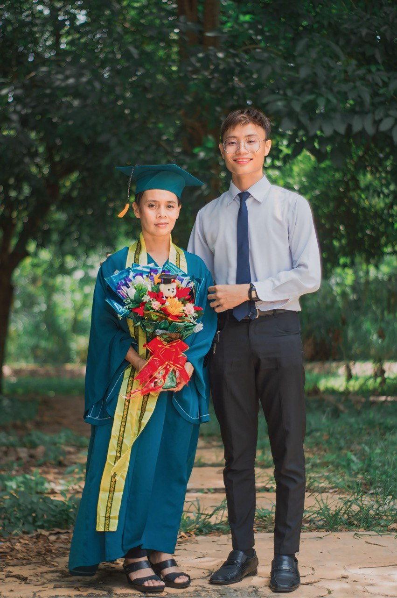
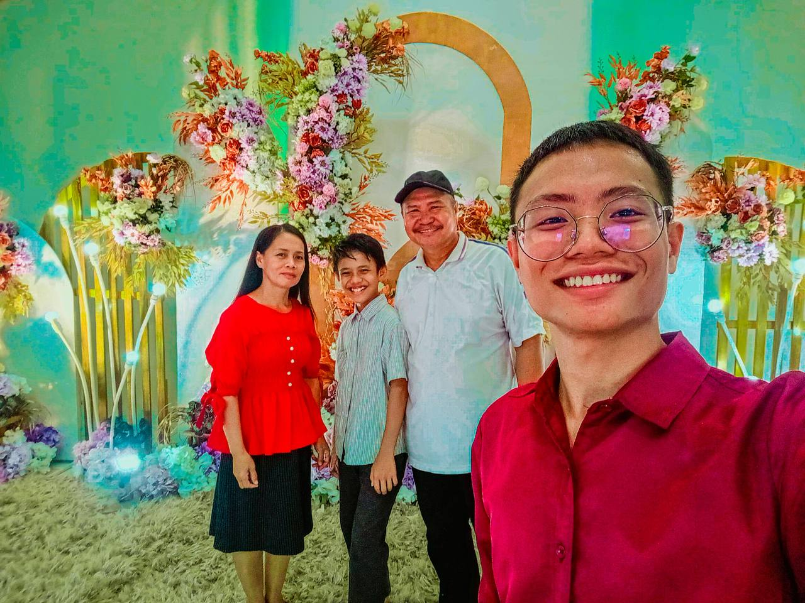
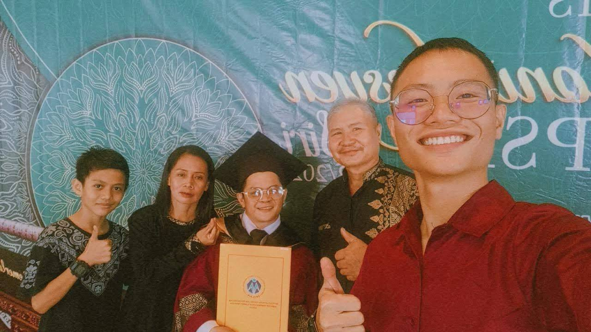
Favorite Food
When it comes to culinary delights, few dishes rival the satisfaction of Pattaya fried rice. Its tantalizing blend of flavors and textures never fails to tantalize my taste buds. The combination of fragrant rice, savory fillings, and a perfectly cooked egg creates a symphony of flavors that I find irresistible. And for refreshment, nothing beats a glass of freshly squeezed carrot juice, bursting with vitamins and goodness. Of course, staying hydrated with plenty of water is a priority for overall well-being. I believe that food is not just about sustenance; it's an experience that brings people together and creates lasting memories. Exploring different cuisines and flavors is one of my passions, and I enjoy experimenting with new recipes and ingredients in the kitchen.
Religion: Christian
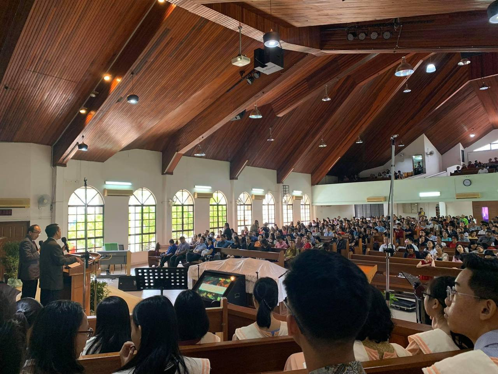
My faith in Christianity serves as a guiding light in my life, imparting values of compassion, forgiveness, and hope. It provides me with a sense of purpose and direction, anchoring me during times of uncertainty and adversity. My faith has been a source of strength and comfort throughout my life, helping me navigate challenges and stay grounded in my principles. Through my involvement in my local church community, I have met wonderful individuals who share my beliefs and values. Together, we support each other in our spiritual journeys and work towards making a positive impact in our community. My faith teaches me to approach life with an open heart and a willingness to serve others, fostering a sense of unity and compassion in all my interactions.
This is me with my sister at church.
Education
My educational journey began at SJKC Khoi Ming, where I laid the foundation for my academic pursuits. Transitioning to SK Tandek for primary education and subsequently to SMK Tandek for secondary education, I've been fortunate to receive a well-rounded education that has broadened my horizons and shaped my intellectual growth. Each stage of my education has presented new challenges and opportunities for learning. At SJKC Khoi Ming, I developed a strong foundation in critical thinking and problem-solving skills. My time at SK Tandek and SMK Tandek further honed my abilities and exposed me to a diverse range of subjects and extracurricular activities. I am grateful for the dedicated teachers and mentors who have guided me along the way, inspiring me to strive for excellence and pursue my passions with determination.
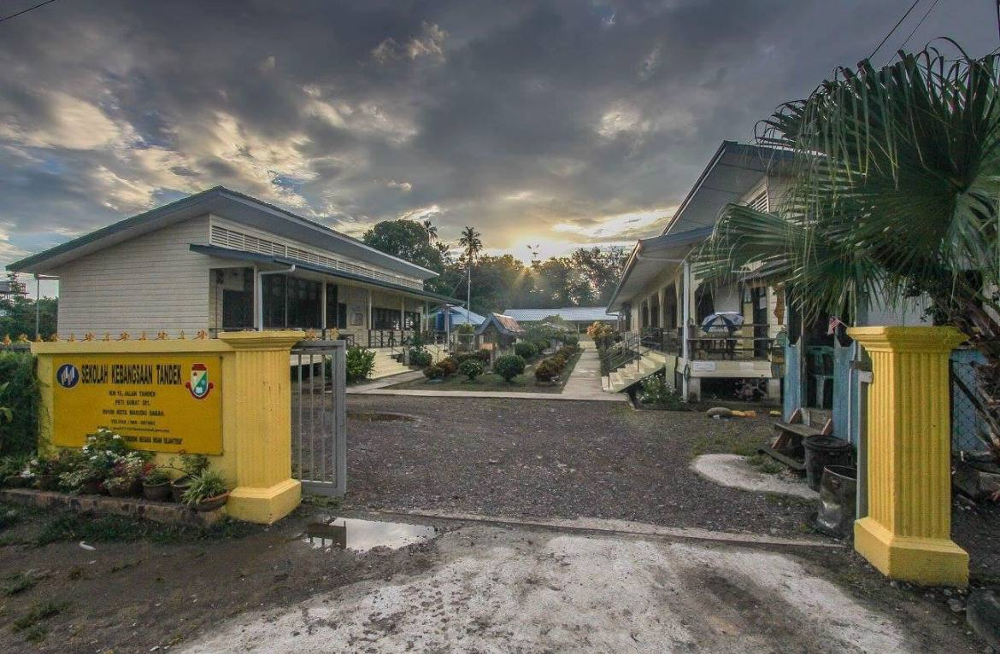
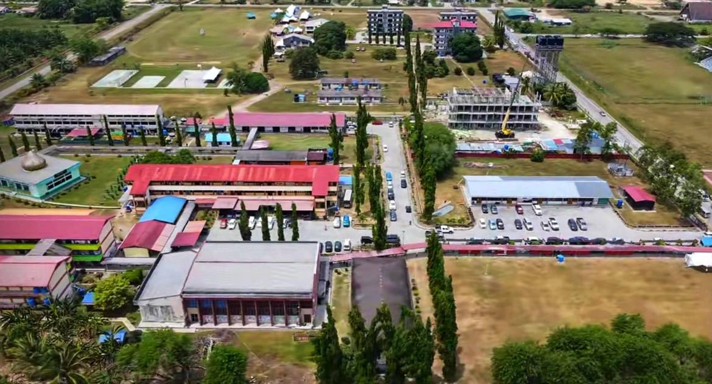
Hobbies
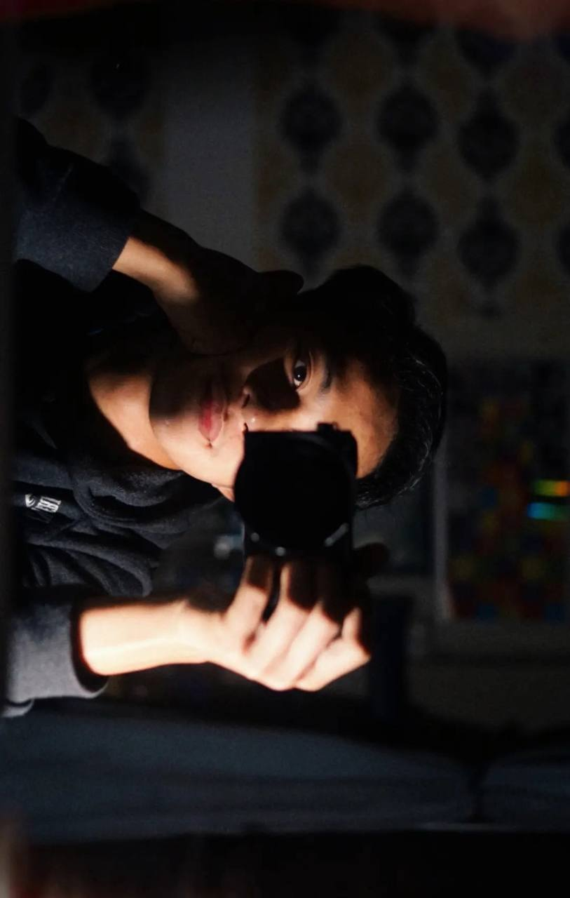
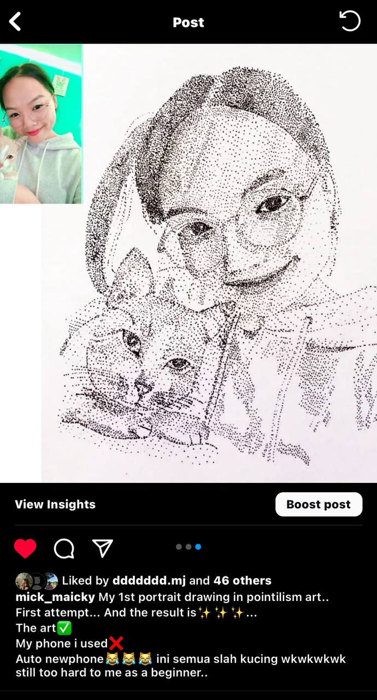
In the tapestry of my life, hobbies are the colorful threads that add vibrancy and joy. Whether it's the soulful melodies of singing, the expressive strokes of painting, or the captivating snapshots of photography, each hobby allows me to channel my creativity and passion into tangible expressions of artistry. Singing has always been a source of joy and comfort for me, allowing me to express my emotions and connect with others through music. Painting provides a therapeutic outlet for my creativity, enabling me to capture the beauty of the world around me on canvas. Photography, on the other hand, allows me to freeze moments in time, capturing memories and experiences that I can cherish forever. These hobbies are more than just pastimes; they are integral to my identity and personal fulfillment.
This is me try to make a lyric by my own self and try to sing it. hihii.
My Traits
Curious, sociable, and resilient—these are just a few descriptors that encapsulate my personality. I possess an insatiable thirst for knowledge, a warm and affable demeanor that fosters meaningful connections, and a steadfast resolve that navigates me through life's ups and downs. My curiosity drives me to explore new ideas and seek out new experiences, constantly expanding my understanding of the world. I thrive in social settings, where I can engage in stimulating conversations and build relationships with people from diverse backgrounds. My resilience has been tested through various challenges, but each obstacle has only strengthened my resolve and determination to overcome adversity. I believe that every experience, whether positive or negative, contributes to personal growth and shapes the person I am today.
Aspirations: Educator
My aspiration to become an educator in the field of Information Management stems from a deep-seated belief in the transformative power of education. I envision myself as a catalyst for change, empowering future generations with the knowledge, skills, and mindset to navigate the complexities of the digital age. Education has the potential to unlock opportunities and create pathways for success, and I am passionate about making a positive impact in this field. As an educator, I aim to foster a love for learning and inspire my students to reach their full potential. I believe in creating an inclusive and supportive learning environment that encourages creativity, critical thinking, and collaboration. Through my dedication and commitment to education, I hope to contribute to the development of future leaders and innovators who will shape the world for the better.
How To Contact Me
If you'd like to connect with me or have any inquiries, feel free to reach out through the following channels. I'm always eager to engage in meaningful conversations and forge new connections. If you'd like to get in touch with me, feel free to do so through the following platforms:
Phone: Please contact me via email to obtain my phone number.
Thank you for accompanying me on this journey of self-discovery. I hope you find inspiration and insight within these pages. Until we meet again, take care and stay curious!

 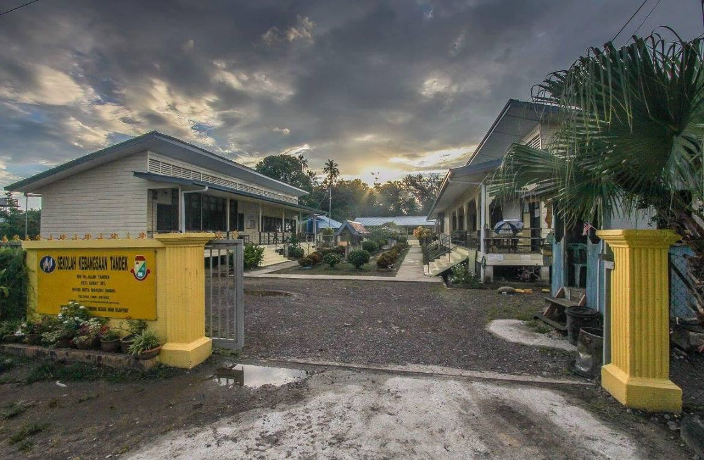
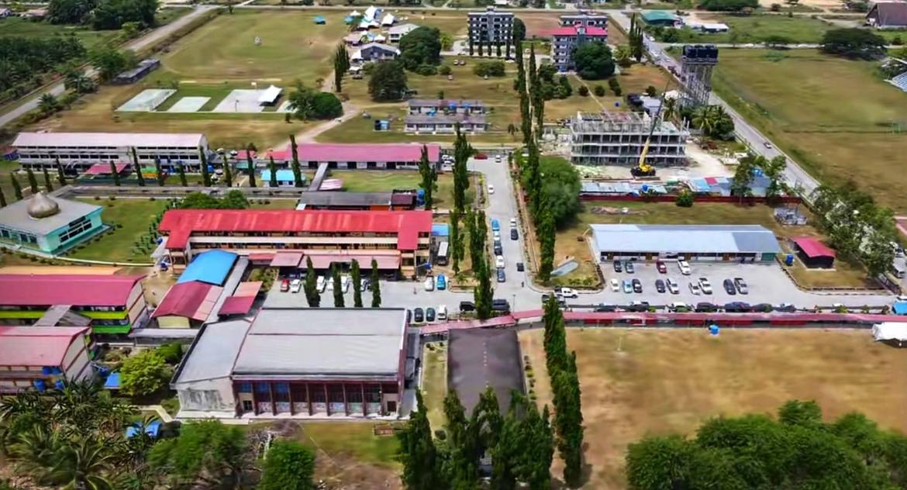
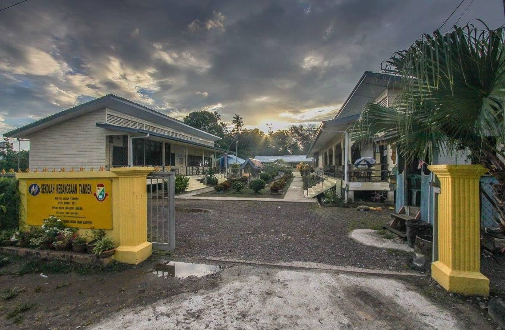
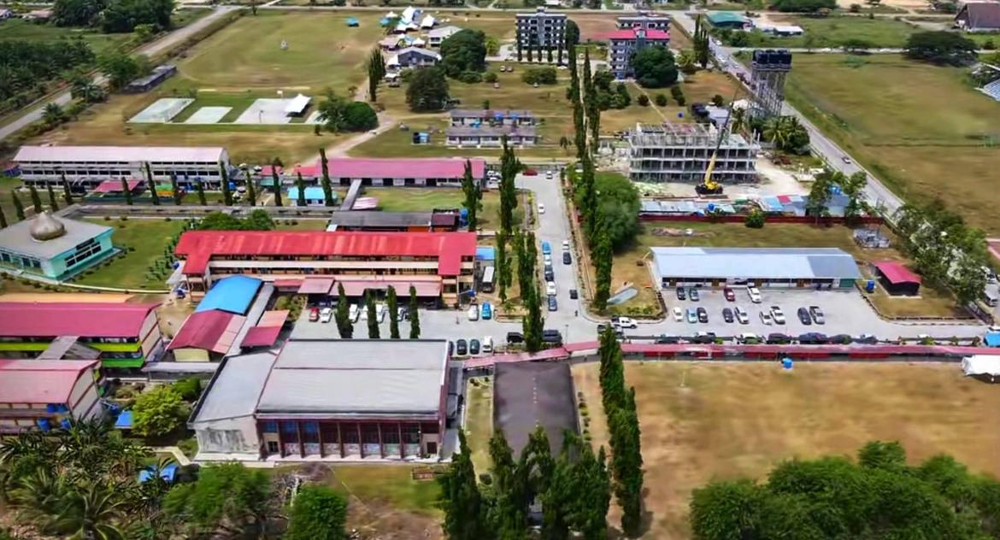